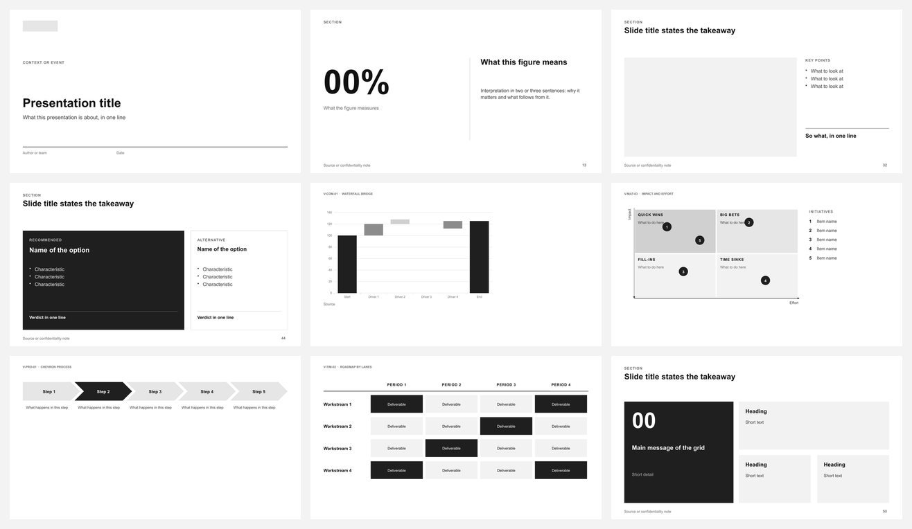
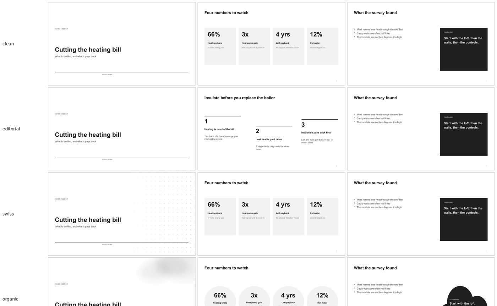
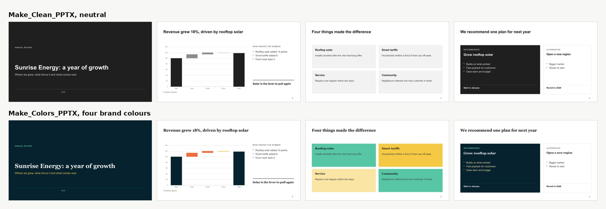

One deck, three steps. Each one is optional.
Every skill works alone, and each one writes a copy next to your file, never over it. Start with the first and add the others when you want them.

Make_Clean_PPTX
Give it your notes, a report or an outline. It plans one message per slide, picks from 54 slide designs and 81 charts and diagrams, fills them with your content and checks the file. The result is neutral on purpose, so the next two steps have something clean to work on.

Make_Style_PPTX
The same deck in another style: rounder or paper-like shapes, items staggered or arced instead of a plain grid, quiet backgrounds. Eighteen styles to choose from, or describe a mood and it drafts one.
Make_Colors_PPTX
Your three or four brand colours, fonts and logo, taken from brand guidelines, a website or example files, as a real PowerPoint theme. Cards, charts and covers take the colours, and it checks that text stays readable, also in greyscale and for colour-blind readers.

Install
Pick the line for the assistant you use. Add the second and third skill later in the same way.
Claude.ai or Claude desktop
Download the zip, turn on Code execution and file creation in Settings → Capabilities, then upload it under Skills.
make-clean-pptx.zip
make-style-pptx.zip
make-colors-pptx.zip
Claude Code
One marketplace lists the three skills:
/plugin marketplace add MaximeRumpler/Make_PPTX
/plugin install make-clean-pptx@make-pptx
The other two, and the terminal version
/plugin install make-style-pptx@make-pptx
/plugin install make-colors-pptx@make-pptx
In a terminal or a script, use claude plugin marketplace add … and claude plugin install … with the same names.
Codex, Cursor, Copilot, Gemini CLI
Needs Node.js. It asks which assistant you use.
npx skills add MaximeRumpler/Make_Clean_PPTX
The other two
npx skills add MaximeRumpler/Make_Style_PPTX
npx skills add MaximeRumpler/Make_Colors_PPTX
New to skills? The get started guide covers install, a first request to copy, and common problems. Content you cannot share: private mode.